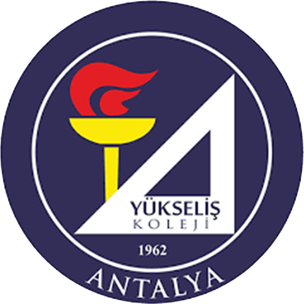

İşaret parmağını kameraya göster ve robotu elinle yönet:
Skorun HOME'a ne kadar sürede ulaştığın. Süre robota ilk dokunduğunda başlar. Boşluğa düşersen son bayraktan devam edersin, süre işlemeye devam eder.
Kamerasız modda robotu fareyle ya da parmağınla ekrana dokunarak yönetirsin.
| # | Ad | Süre | Düşme |
|---|
| # | Ad | Süre | Düşme |
|---|